CF—AI—002 / 2026
Imagined Exhibitions
Exhibitions that exist as images.
Imagined exhibitions made with Nano Banana in 2026. Dark rooms, temporary walls, and everyday materials become places to try out installations. These are AI-generated images, not documentation of built exhibitions. The group names and captions describe what’s in the pictures.
Temporary walls

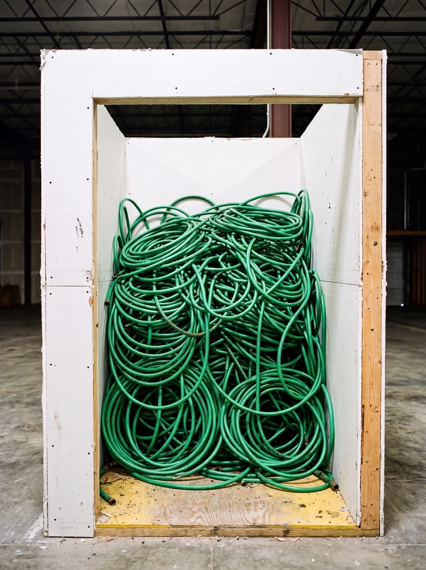

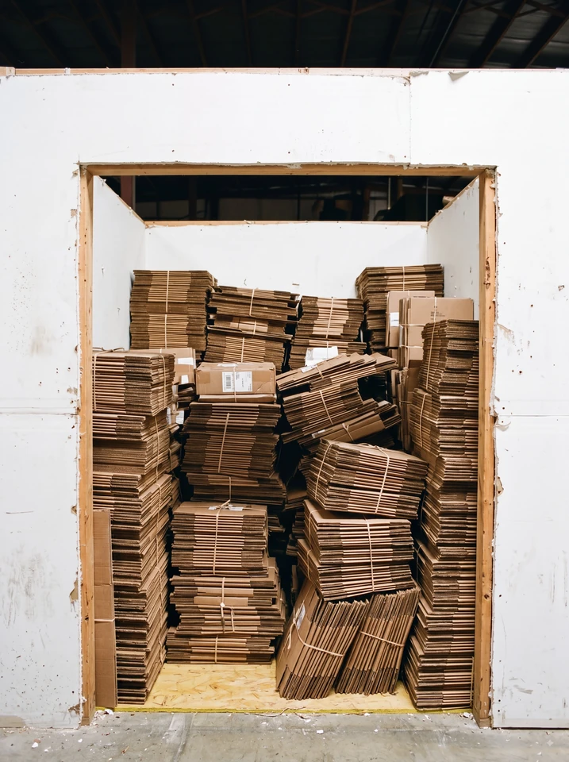

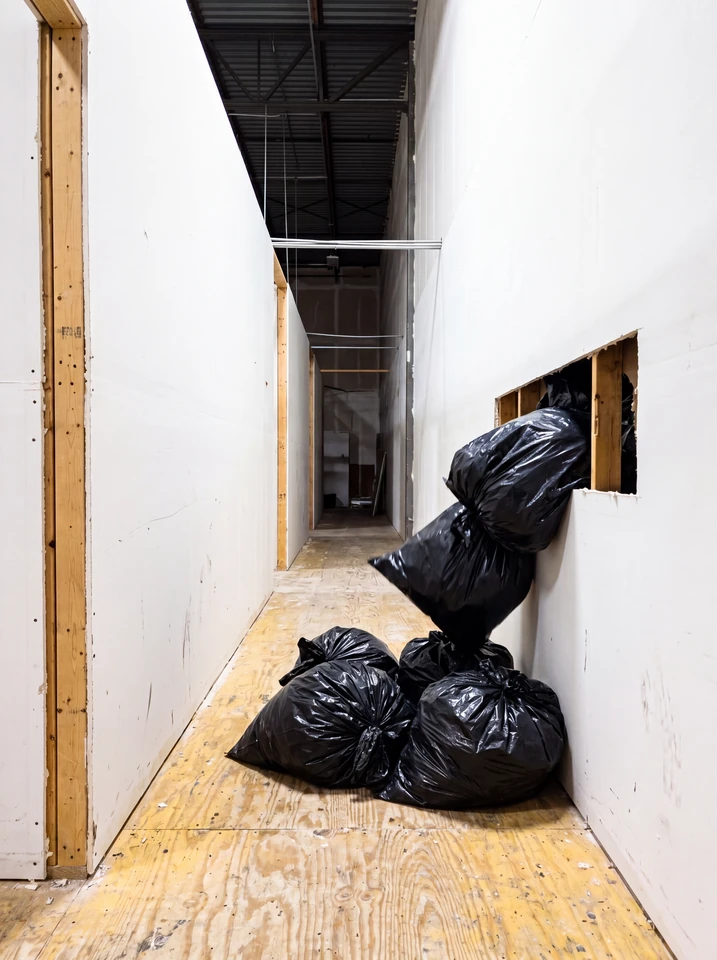

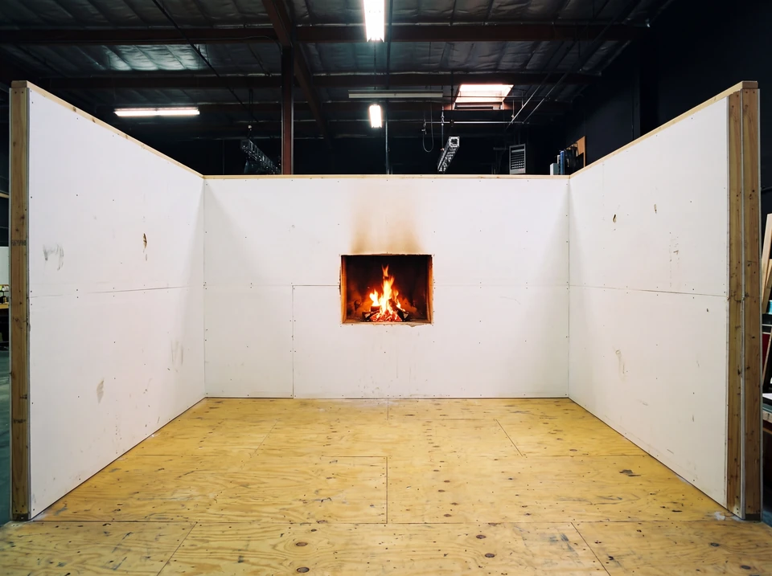

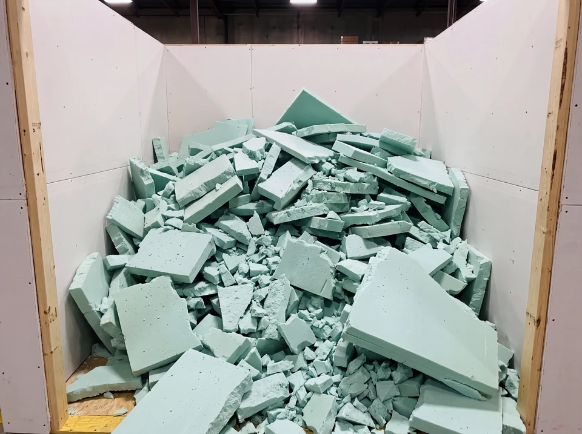

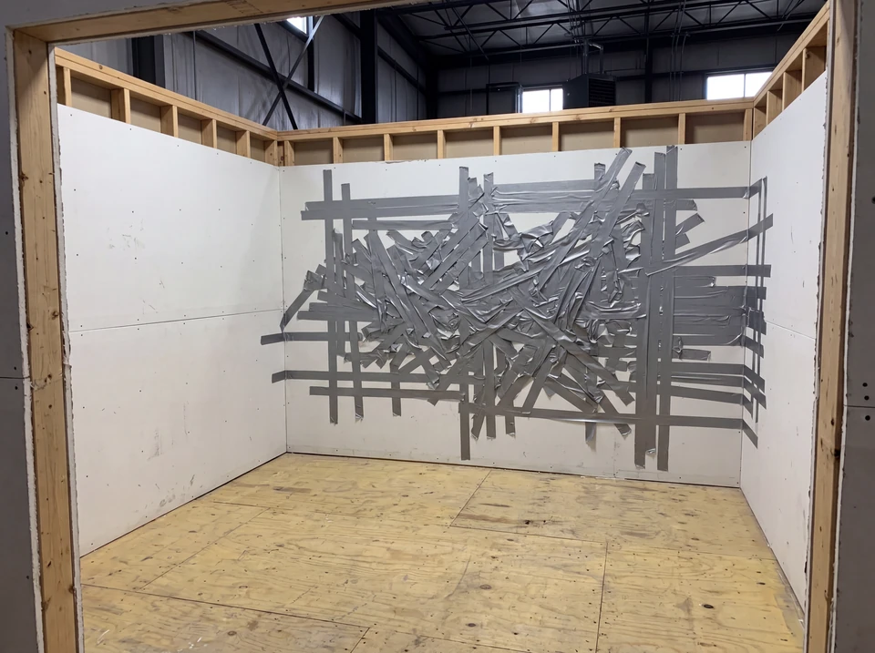
Dark rooms

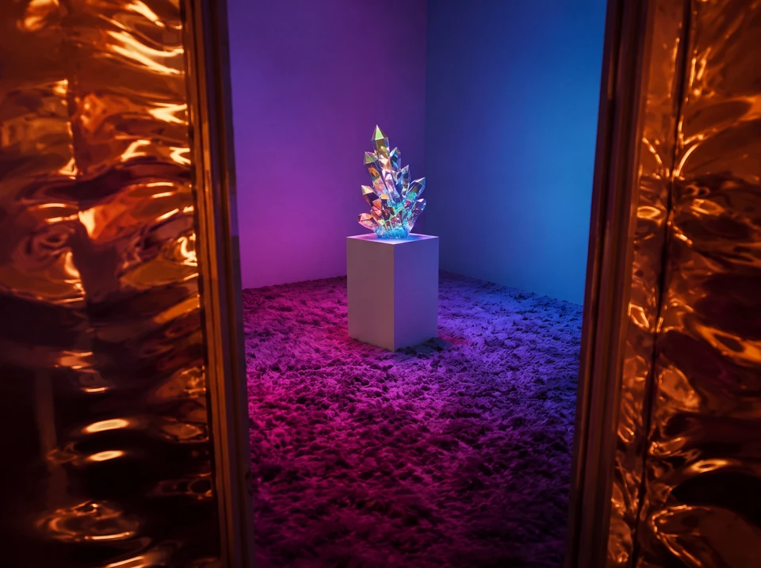

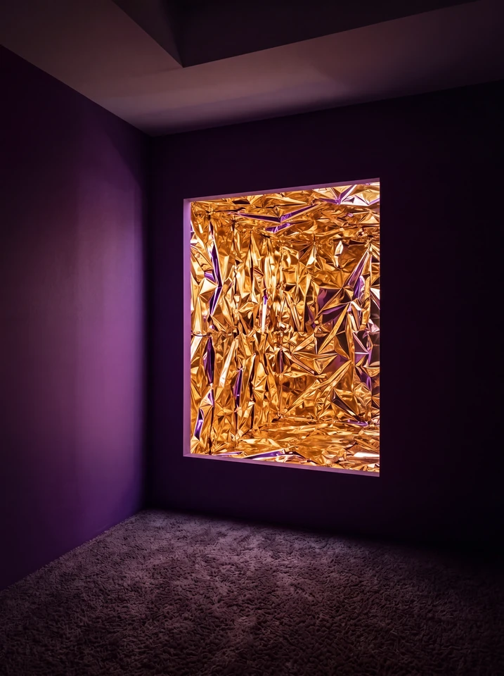

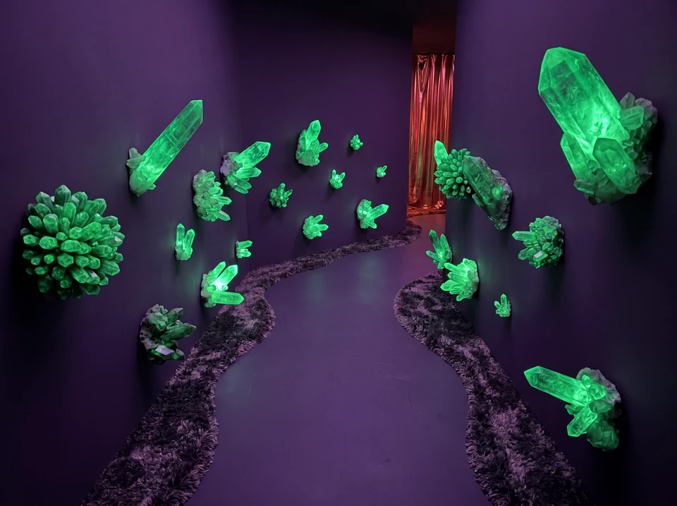

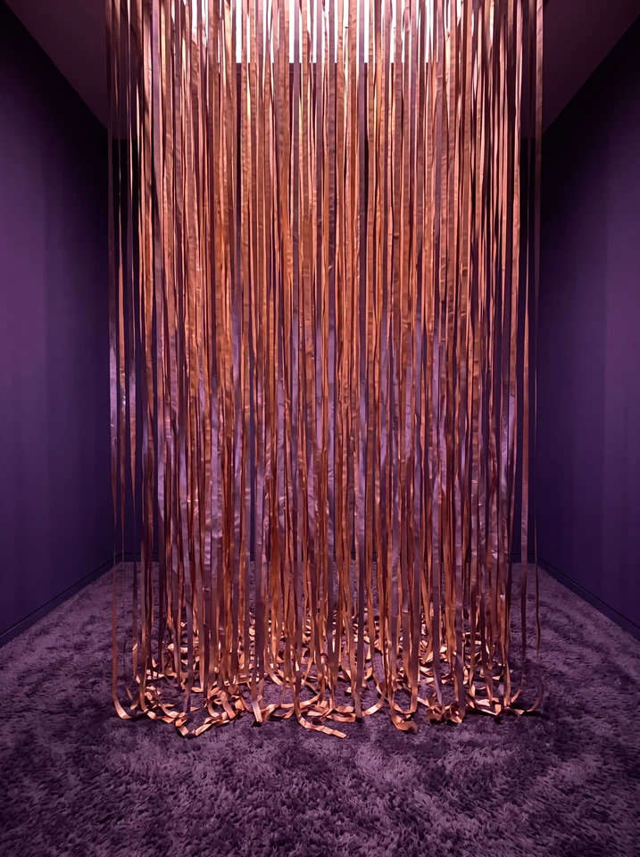

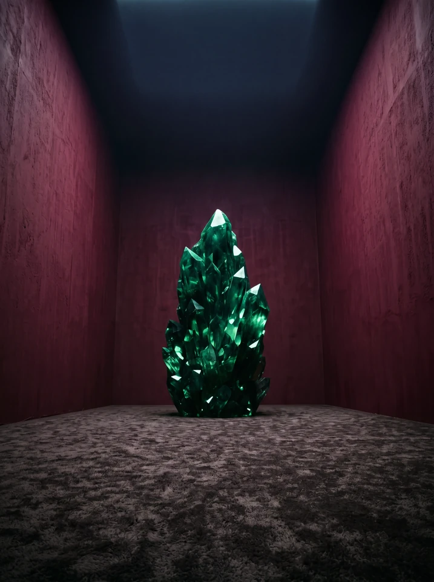

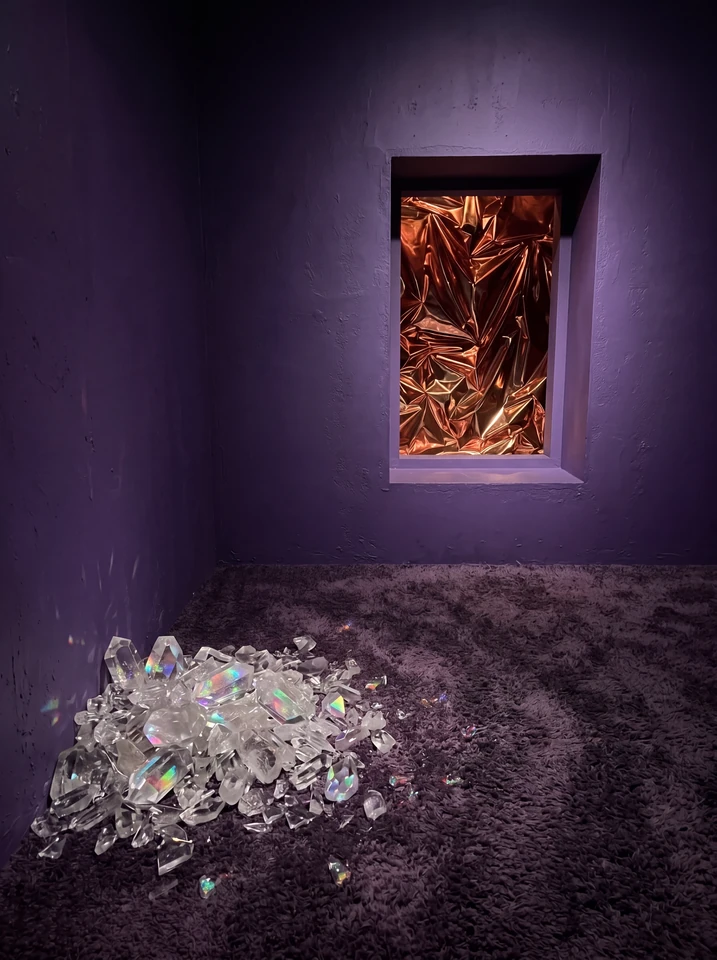